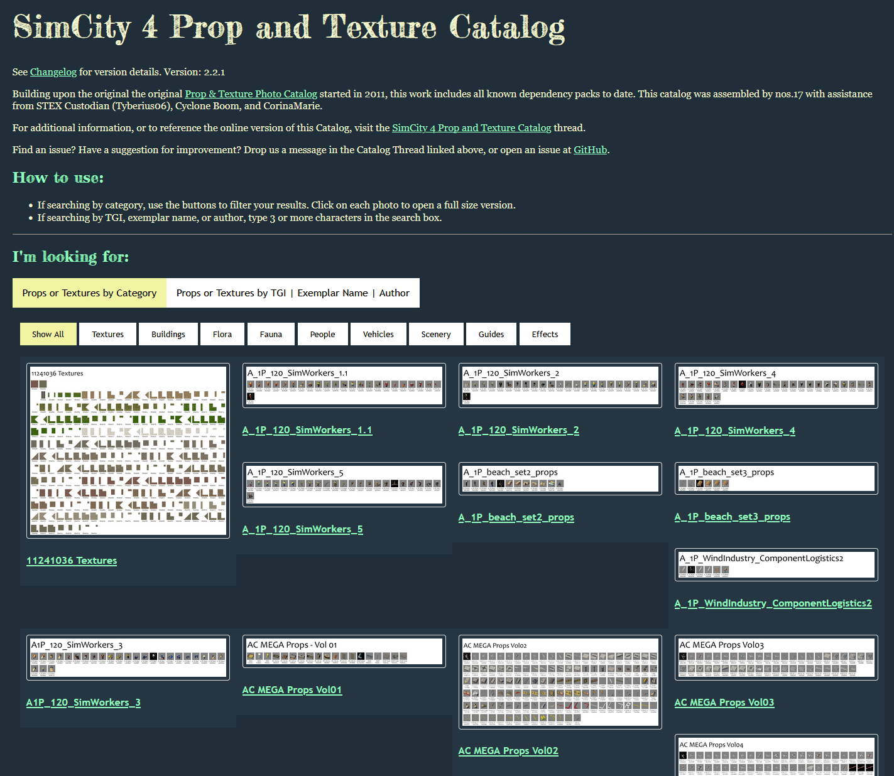
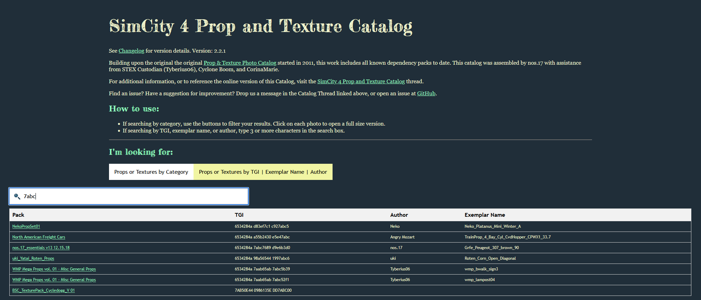

The SimCity 4 Prop + Texture Catalog (source) is a listing of prop and texture dependencies which lotters may use to help choose assets to use on their lots. The prop and texture catalog was first conceived by SC4Devotion admin Jmouse and posted to SC4Devotion between 2011 and 2012.
While useful, the original version was quite limited in scope. I laid out some of my ideas for a much more expanded catalog and its potential uses in a a post at Simtropolis. The idea centered around a methodology to index and catalog all content ever uploaded to public exchanges. This had the potential to make fetching and updating mods much easier for newer players, or players who just want to play the game do not want to spend the vast amount of time it can take to acquire the mods they want to use. This scope was quite broad and I settled on narrowing the scope a bit to focus on two use cases:
- For lot creators - I could provide them an interface for looking for different and better content to incorporate into their work. Looking for a motorcycle to add to your lot? Then filter only prop packs that contain vehicles and/or motorcycles. Looking for seasonal trees? Look through all packs that contain seasonal trees until you can find the right ones.
- For players - If you are playing with mods and load into the game without an asset the game is expecting, you will be presented with a dialog box listing the missing assets. However, it only presents you with a list of IDs that are generally not at all helpful to a player. Using this tool, a user can input that ID number and have a chance of finding the file that ID belongs to.
The current version is hosted online here.
Early versions : HTML & JS (2021 | versions 1.x.x - 2.x.x)
The first versions of the catalog were entirely HTML and image based. Each prop or texture pack has a collage of all items in the pack,

Each item in the "database" is a row in the main HTML table, and used Javascript to show/hide rows based on a user search query. This was my very first experience with Javascript, so the interactivity was very basic. or search for props by TGI (a unique identifier used by the game), author who created the prop, or the prop name.

Later versions : SQLite (2023-2025 | versions 3.x)
As the size of the catalog grew past 50,000 items, the performance of the JavaScript solution especially when searching for key words began to degrade. I wanted to add more and more content missing into the catalog and realized I needed a better solution capable of handing hundreds of thousands of records, or more, so a proper database was required. I ultimately settled on using SQLite for the database, because it is fairly lightweight, it doesn't require a complicated setup procedure if a user wanted to view the database offline, and it is a very ubiquitous technology so it would be easy to find help. In addition, I found sqlite-net, a very nice library which made it easy to interface with SQLite files from C#, a language I was already familiar with. Using code I had previously created as part of my csDBPF library, I began ingesting the data from the 600 or so different dependency files into the catalog.
I now needed a way to interface with the SQLite database. At this time, I had very little familiarity with Javascript and somewhat foolishly was opposed to learning it, so I ultimately settled on using an ASP.NET website with Blazor, where I could use C# still. Despite the initial learning barrier of ASP.NET and web requests in general, the 3.x versions debuted this new ASP.NET front end interface. The server and site were hosted via the Azure App Service. The result of the 3.x redesign was far better performance when querying, especially with queries that return thousands of rows, and far more flexibility and options for implementing other user features like filters and more advanced queries.

Latest version : API (2025+ | versions 4.x)
I continued to expand the content included in the catalog, and while the performance of the catalog itself was fine, the management of the DBPF files used as the source of the catalog became more and more unwieldy. In my setup for the 3.x version, I needed to acquire every prop and texture dependency file, manually maintain a separate index of metadata about each (author, categories, information about contents), and keep organized in a specific naming convention within a folder. The metadata index took the form of a large Excel spreadsheet that was tedious to update; keeping up with changes as authors released new dependency packs or updated existing packs was very difficult.
Around this time, sc4pac, a package manager for managing and installing plugins, was created. The important bit is that when sc4pac installs content, it downloads the assets into a temp folder. Instead of managing a folder with all the dependencies myself, I leverage the contents of this folder, plus the JSON metadata that sc4pac uses, to parse into the catalog. Using the sc4pac metadata and cache allows me to access a much wider variety of files, finally allowing the possibility to expand out from indexing only dependencies to indexing all files, while keeping up with new versions and updates automatically.
The first step involves extracting the assets from the sc4pac which come as zip files. These are stashed in a separate folder for reuse between catalog builds. Next, I use the sc4pac CLI commands to build the channel metadata - this converts the YAML metadata to JSON which is much easier to process. Using my csDBPF library, I process the TGIs in each file, and use the sc4pac metadata to associate a version, author, url, and other information about each file. This information is stashed in an SQLite database.
The expansion of the Catalog outside of hosting just prop and texture dependencies immediately raised the usefulness of incorporating the catalog data into other tools too. One of the first uses proposed would augment a series of scripts to fully automating dependency tracking when creating new sc4pac metadata. The potential varieties of projects that may want to access the catalog data was wide (desktop, web, cli, C#, node.js, etc.), so I chose to create an API to serve the catalog data as platform agnostic as possible. The API is set up using Express on Node.js, and hosted on Railway (example). I set up the endpoints of the API to mirror as closely as possible the SQL joins I was previously making when querying the database from ASP.NET. At the time I was fairly inexperienced with Javascript and especially with Node.js and web servers, so this was my first project with significant AI assistance. It was a neat resource to use to generate the base boilerplate structure for the first time, which I was then able to take and customize myself for exactly the functionality I wanted and coding style I desired.
Now that the serving of the catalog is separated from the UI, I was able to pursue any infrastructure I wanted to serve the user-facing side of the catalog. By this time I had "come around" on Javascript and I do like designing web pages, so I settled on a simple HTML/CSS website with basic vanilla Javascript to request data and update the page. I replaced the Bootstrap framework from the ASP.NET site with the lightweight Pico CSS framework, as the full Bootstrap compliment felt like overkill for a site like this. All other design of the site is my own styling and creation, and takes inspiration from the past catalog versions.